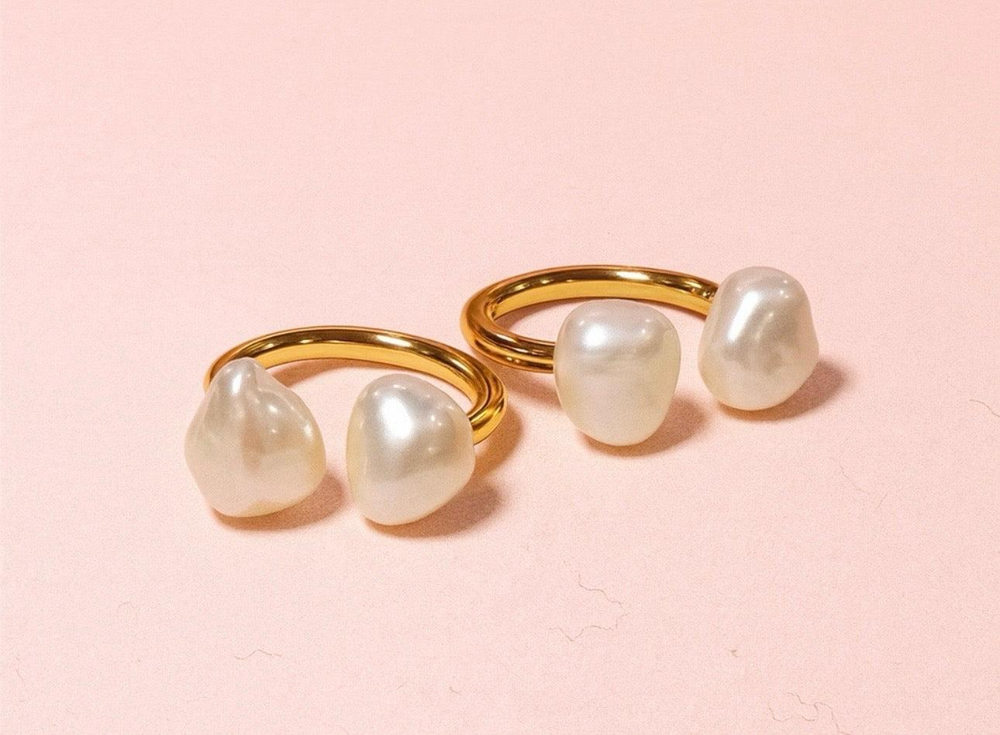

PROJECT 01 / JEWELRY WEBSITE
光影金工｜手作珠寶網站
以手作珠寶金工體驗為主題， 運用 HTML、CSS 與網頁排版技術， 打造柔和粉色系的品牌形象網站。 呈現手作金工體驗、珠寶設計、 品牌特色與預約服務， 練習視覺設計與使用者介面規劃。
查看作品 ↗ABOUT ME
從資訊管理到前端設計， 持續累積技術與實作能力。
EDUCATION
國立高雄科技大學｜資訊管理
具備資訊管理學習背景， 曾接觸資料庫管理與資訊系統相關課程， 持續精進程式設計與資料處理能力。
EXPERIENCE
2026｜前端與跨平台程式設計訓練
學習 HTML、CSS、JavaScript、 Bootstrap、PHP、MySQL、 Flutter、Figma 與 Photoshop。
曾參與工程與資訊系統相關工作， 希望結合實務經驗與程式設計， 開發更有效率的資訊系統。
MY SKILLS
從網頁版型到跨平台開發， 逐步建立完整的技術基礎。
SELECTED WORKS
記錄每一次練習， 讓設計想法成為真正可以瀏覽的網站。

PROJECT 01 / JEWELRY WEBSITE
以手作珠寶金工體驗為主題， 運用 HTML、CSS 與網頁排版技術， 打造柔和粉色系的品牌形象網站。 呈現手作金工體驗、珠寶設計、 品牌特色與預約服務， 練習視覺設計與使用者介面規劃。
查看作品 ↗PROJECT 02 / INTERACTIVE WEBSITE
使用 HTML、CSS 與 Bootstrap 製作四季旅行主題的時間軸網站。 結合左右交錯排版、 四方向 Roller 滑動遮罩效果， 以及適應不同螢幕的 RWD 設計， 展示網頁版型與互動動畫成果。
查看作品 ↗DESIGN PHILOSOPHY
Design × Technology × Experience
我希望每一個作品都能兼顧 視覺設計、使用者體驗與實際功能。
從最初的 HTML 結構， 到 CSS 版型設計、JavaScript 互動效果， 每一次練習都是累積實作能力的過程。
未來希望持續精進前端開發、 資料庫與系統整合能力， 將創意轉化為真正可以使用的產品。